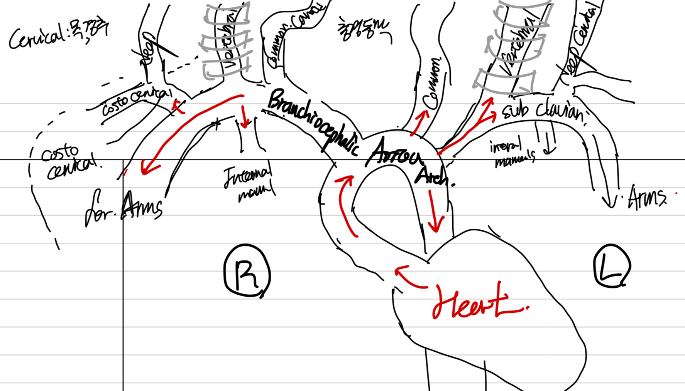
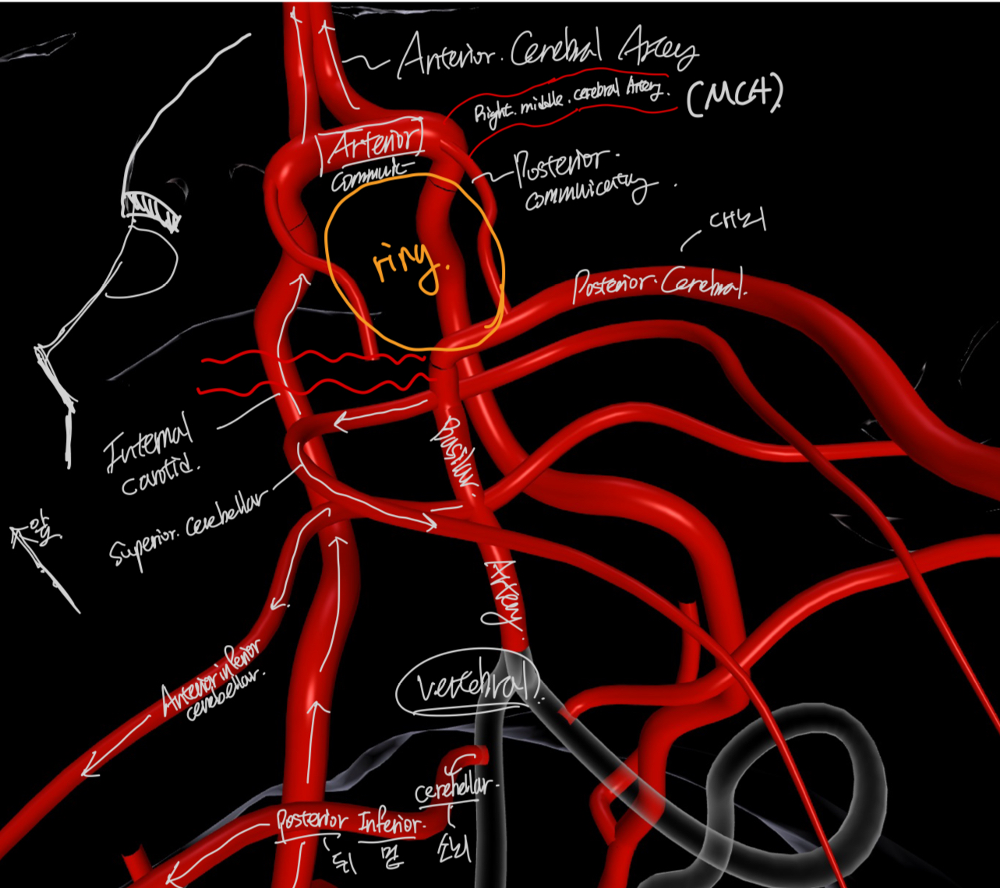
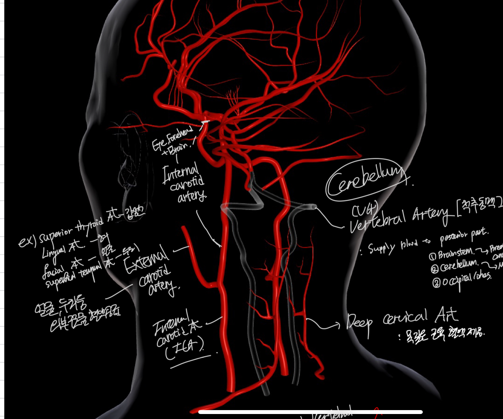
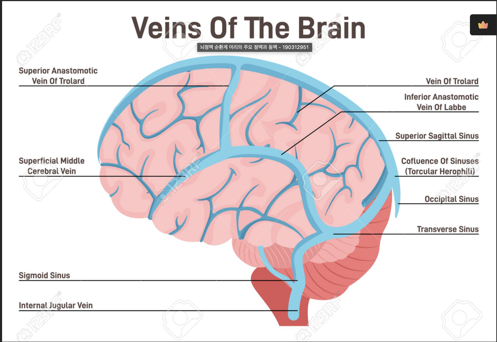

---
{
"layout": "note",
"title": "Physiology of Blood Flow and Metabolism",
"journal": true,
"section": "Study",
"topic": "Blood Flow and Metabolism",
"excerpt": "Physiology of Blood Flow and Metabolism 지금 현재 인체에 있는 혈액의 유동을 전산유체해석으로 질병예측, 수술시뮬레이션, 개개인 환자 모델링 등등의 적용을 위해서 연구하고 있는 중입니다. 그 중에서, 뇌",
"classes": "wide",
"permalink": "/blog/biomechanics/blood-flow-and-metabolism/physiology-of-blood-flow-and-metabolism/",
"study_area": "Mechanical",
"date": "2024-09-20",
"source_url": "https://jeffdissel.tistory.com/m/83",
"header": {
"teaser": "/blog/biomechanics/blood-flow-and-metabolism/physiology-of-blood-flow-and-metabolism/images/img-001.jpg"
}
}
---
{% raw %}Physiology of Blood Flow and Metabolism
지금 현재 인체에 있는 혈액의 유동을 전산유체해석으로
질병예측, 수술시뮬레이션, 개개인 환자 모델링 등등의 적용을 위해서 연구하고 있는 중입니다.
그 중에서, 뇌혈관의 유동에 대해서 알아보기 전에/ 뇌의 해부학, 생리학에 대해서 정리해보고 합니다.
혈액은
심장 -> 신체 조직 으로 산소를 공급해줍니다.
심장과 조직의 사이의 통로가 바로 'Artery' 동맥 이지요.
Heart 에서 혈액은 곧 바로 Aortoa Arch 아치모양 대동맥을 지나게 됩니다.
아치모양의 대동맥에서,
Right side - Branchiocephalic artery
-> Common Carotid Artery(Right)
& Vertebral Artery(LEFT)
Left side - Common Carotid Artery(Left)
-> Subclavian Artery(LEFT) -> Vertebral Artery(LEFT)
다음과 같이 또다른 동맥들로 흩어지게 됩니다. 밑의 사진처럼.

여기서 자세하게 다 알 필요는 없고, 핵심은
위(머리) 방향으로
총 좌 3개의 동맥, 우 3개의 동맥
(Left and Right)/ Carotid Artery, Vetebral Artery, Deep Cervical Artery)
이 흘러간다는 점입니다.
이후 뇌의 혈관들로 흘러 들어가게 되는데.....
굉장히 복잡한 삼차원 모습이기 때문에 밑의 링크를 참고하면서, 봐주세요.
https://human.biodigital.com/widget/?be=2En8&background.colors=0,0,0,1,0,0,0,1&initial.hand-hint=true&ui-info=true&ui-fullscreen=true&ui-center=false&ui-dissect=true&ui-zoom=true&ui-help=true&ui-tools-display=primary&ui-media-controls=none&uaid=3bHW3
Human Anatomy and Disease in Interactive 3D | BioDigital Human Platform
human.biodigital.com
복잡하지만, 아주 핵심만 사실 기억하면 됩니다.
바로
the Circle of Willis
이것만 기억해도 됩니다 사실
밑의 사진의 투명색, 심장에서 올라오는 혈액 3종류중 (Vertebral Artery/ VA)
-> Basillar Artery(BA)
-> Ring
이렇게 연결 된 것을 확인하시겠죠??
그리고 아주 신기하게도,
심장에서 오는 동맥중 하나인 (Internal Carotid Arteries(L&R) / ICAs)
가 고리의 위쪽에서 만나는 것을 알 수 있습니다.
즉 심장에서 오는 동맥중 2개가 서로. 머리. 안에있는 고리에서 만난 다는 것.
그리고, 위 링크를 통해서 확인하시면, 이 고리를 중심으로
머리의 곧곧으로 동맥들을 통해 펴져 나갑니다.
쉽게 Anterior - 전방
Posterior - 후방
Cerebral - 대뇌
Vertebral - 척추
Carotid - 목
이렇게 용어를 기억하시면, 나머지 용어들이 편할껍니다!.
Anterior Cerebral Artery(ACAs)
-고리위 앞쪽으로 뻗어나가서 Frontal Lobe, Medial Surface
Anterior Commnicating Artery(AcA) (ring's upper part)
-Ring 연결
Posterior communicating Arteries(PcAs)
-(connect the ring)
Middle cerebral Arteries(MCAs)
-Cerebral Lateral sufrace (측면에 혈액공급)
-Temporal, Parietal, Frontal (external)
Posterial cereral Arteries(PCAs)
-Occipital lobe, Inferior of Temporal lobe

사진을 가리는 관계로 왼쪽의 Posterior Cerebral delete 했습니다^^
한편, 심장에서 올라간 동맥 3개 중
Deep Cervical Artery(L&R) 은 목 깊은 근육에 혈액을 제공해주고,
나머지 고리에서 만나는 두가지,,
1. Common Carotid Artery
-> Internal & External 로 나누어집니다.
External - 얼굴, 두피, 안면 혈액공급.
그리고 Internal Carotid Artery 는 뇌 깊숙히 혈액을 공급해줍니다(고리와 만나는 혈액)
2. Vertebral Artery 는 Posterior part
brainstem/cerebellum/occipital lohes 에 혈액을 공급합니다.
(뇌간, 소뇌, 후두엽)

이제 노폐물과 이산화탄소를 챙긴,
정맥의 흐름이 어떻게 되는지 살펴보자.

핵심은 Vein에서 직접, 뇌에서 가져올 노폐물들을 챙겨오고
(Superficial Veins) 표면,
(Deep Veins) 뇌 깊은 곳,
->
이것들이 Venoous Sinusese(정맥동) 으로 모아진다 - 통로역할
->
(Superior Sagittal Sinus) - Cerebral Surface
(Inferior Sagittal Sinus)
(Straight Sinus)
(Transverse Sinus)
(Cavernous Sinus)
->
(Sigmoid Sinus) S상 정맥동
-뇌 바깥쪽으로 흘러보냄
->
경정맥 내정맥(Internal Jugular Vein)
-> 두개골을 빠져나가 심장으로 이동.
지금까지 간단하게 동맥, 정맥의 위치, 용어 들에 대해서 알아보았습니다.
다음 ch1.2 는 이제 혈액의 순환이 어떻게 흐르는 지에 대해서 알아보겠습니다.{% endraw %}